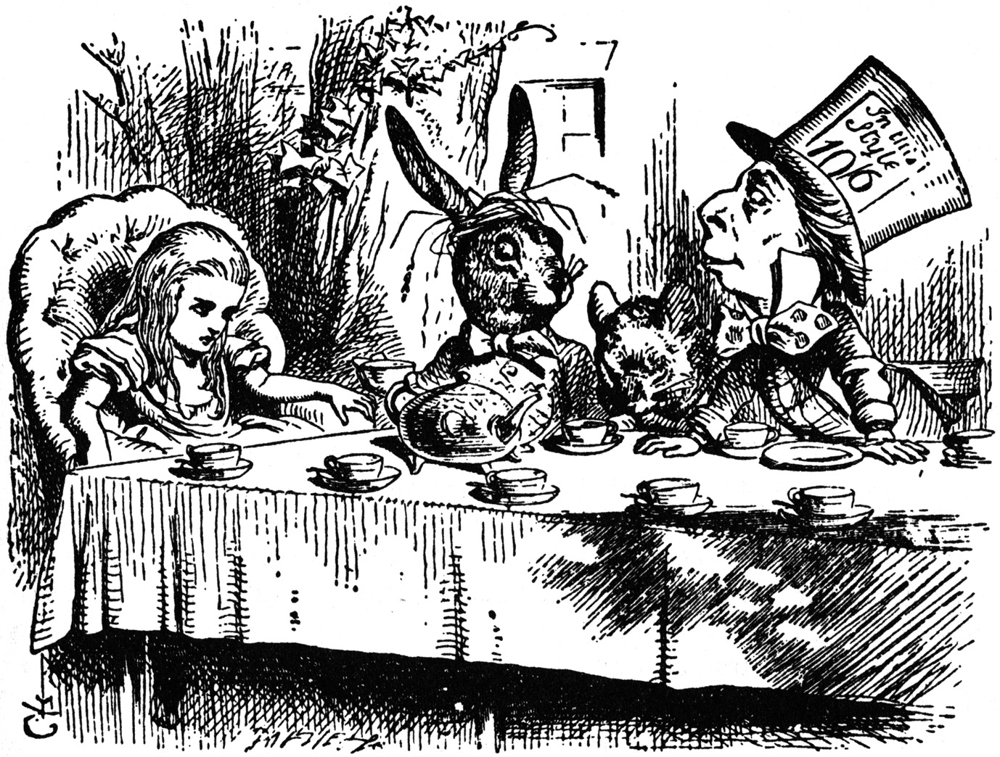
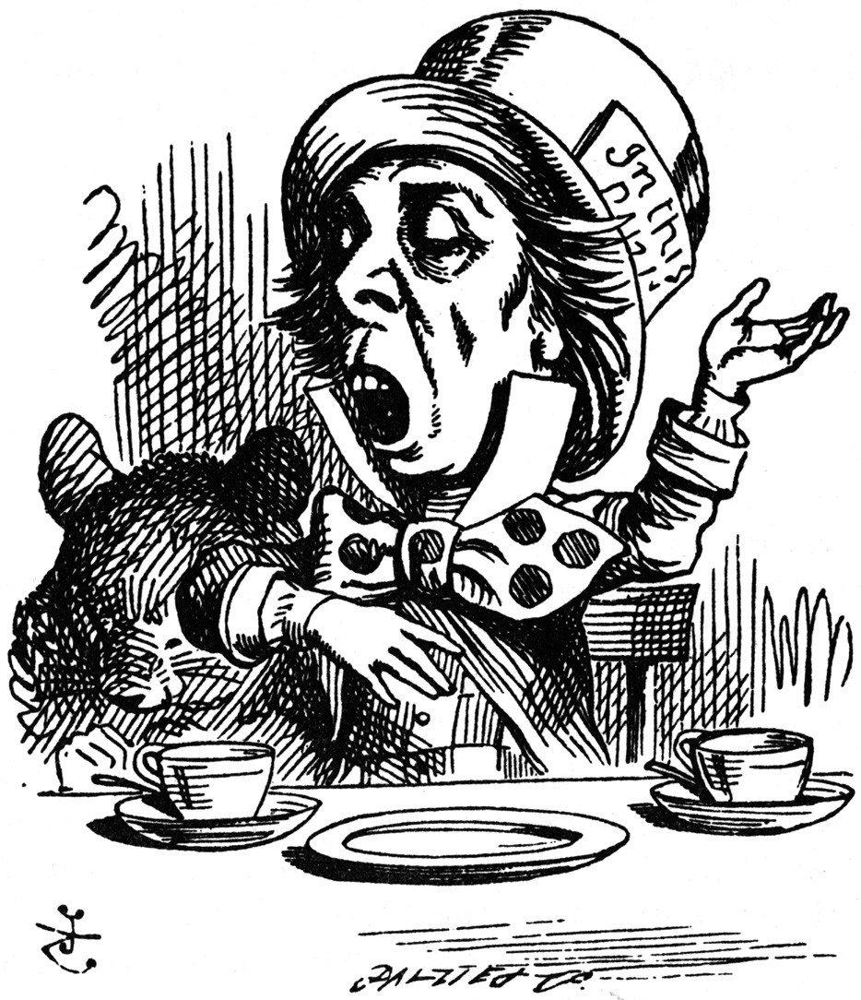
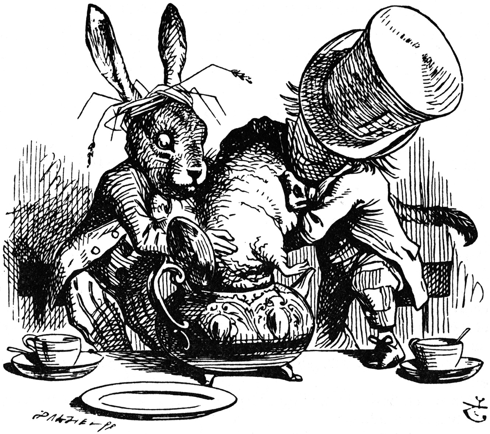

There was a table set out under a tree in front of the house,
and the March Hare and the Hatter were having tea at it: a
Dormouse was sitting between them, fast asleep, and the other two
were using it as a cushion, resting their elbows on it, and
talking over its head. 'Very uncomfortable for the Dormouse,'
thought Alice; 'only, as it's asleep, I suppose it doesn't
mind.'
The table was a large one, but the three were all crowded
together at one corner of it: 'No room! No room!' they cried out
when they saw Alice coming. 'There's plenty of room!' said
Alice indignantly, and she sat down in a large arm-chair at one
end of the table.

Mad Tea Party
'Have some wine,' the March Hare said in an encouraging
tone.
Alice looked all round the table, but there was nothing on it
but tea. 'I don't see any wine,' she remarked.
'There isn't any,' said the March Hare.
'Then it wasn't very civil of you to offer it,' said Alice
angrily.
'It wasn't very civil of you to sit down without being
invited,' said the March Hare.
'I didn't know it was your table,' said Alice; 'it's
laid for a great many more than three.'
'Your hair wants cutting,' said the Hatter. He had been
looking at Alice for some time with great curiosity, and this was
his first speech.
'You should learn not to make personal remarks,' Alice said
with some severity; 'it's very rude.'
The Hatter opened his eyes very wide on hearing this; but all
he said was, 'Why is a raven like a writing-desk?'
'Come, we shall have some fun now!' thought Alice. 'I'm glad
they've begun asking riddles.--I believe I can guess that,' she
added aloud.
'Do you mean that you think you can find out the answer to
it?' said the March Hare.
'Exactly so,' said Alice.
'Then you should say what you mean,' the March Hare went
on.
'I do,' Alice hastily replied; 'at least--at least I mean what
I say--that's the same thing, you know.'
'Not the same thing a bit!' said the Hatter. 'You might just
as well say that "I see what I eat" is the same thing as "I eat
what I see"!'

Hatter engaging in rhetoric
'You might just as well say,' added the March Hare, 'that "I
like what I get" is the same thing as "I get what I like"!'
'You might just as well say,' added the Dormouse, who seemed
to be talking in his sleep, 'that "I breathe when I sleep" is the
same thing as "I sleep when I breathe"!'
'It is the same thing with you,' said the Hatter, and
here the conversation dropped, and the party sat silent for a
minute, while Alice thought over all she could remember about
ravens and writing-desks, which wasn't much.
The Hatter was the first to break the silence. 'What day of
the month is it?' he said, turning to Alice: he had taken his
watch out of his pocket, and was looking at it uneasily, shaking
it every now and then, and holding it to his ear.
Alice considered a little, and then said 'The fourth.'
'Two days wrong!' sighed the Hatter. 'I told you butter
wouldn't suit the works!' he added looking angrily at the March
Hare.
'It was the best butter,' the March Hare meekly
replied.
'Yes, but some crumbs must have got in as well,' the Hatter
grumbled: 'you shouldn't have put it in with the
bread-knife.'
The March Hare took the watch and looked at it gloomily: then
he dipped it into his cup of tea, and looked at it again: but he
could think of nothing better to say than his first remark, 'It
was the best butter, you know.'
Alice had been looking over his shoulder with some curiosity.
'What a funny watch!' she remarked. 'It tells the day of the
month, and doesn't tell what o'clock it is!'
'Why should it?' muttered the Hatter. 'Does your watch
tell you what year it is?'
'Of course not,' Alice replied very readily: 'but that's
because it stays the same year for such a long time
together.'
'Which is just the case with mine,' said the
Hatter.
Alice felt dreadfully puzzled. The Hatter's remark seemed to
have no sort of meaning in it, and yet it was certainly English.
'I don't quite understand you,' she said, as politely as she
could.
'The Dormouse is asleep again,' said the Hatter, and he poured
a little hot tea upon its nose.
The Dormouse shook its head impatiently, and said, without
opening its eyes, 'Of course, of course; just what I was going to
remark myself.'
'Have you guessed the riddle yet?' the Hatter said, turning to
Alice again.
'No, I give it up,' Alice replied: 'what's the answer?'
'I haven't the slightest idea,' said the Hatter.
'Nor I,' said the March Hare.
Alice sighed wearily. 'I think you might do something better
with the time,' she said, 'than waste it in asking riddles that
have no answers.'
'If you knew Time as well as I do,' said the Hatter, 'you
wouldn't talk about wasting it. It's him.'
'I don't know what you mean,' said Alice.
'Of course you don't!' the Hatter said, tossing his head
contemptuously. 'I dare say you never even spoke to Time!'
'Perhaps not,' Alice cautiously replied: 'but I know I have to
beat time when I learn music.'
'Ah! that accounts for it,' said the Hatter. 'He won't stand
beating. Now, if you only kept on good terms with him, he'd do
almost anything you liked with the clock. For instance, suppose
it were nine o'clock in the morning, just time to begin lessons:
you'd only have to whisper a hint to Time, and round goes the
clock in a twinkling! Half-past one, time for dinner!'
('I only wish it was,' the March Hare said to itself in a
whisper.)
'That would be grand, certainly,' said Alice thoughtfully:
'but then--I shouldn't be hungry for it, you know.'
'Not at first, perhaps,' said the Hatter: 'but you could keep
it to half-past one as long as you liked.'
'Is that the way you manage?' Alice asked.
The Hatter shook his head mournfully. 'Not I!' he replied. 'We
quarrelled last March--just before he went mad, you
know--' (pointing with his tea spoon at the March Hare,) '--it
was at the great concert given by the Queen of Hearts, and I had
to sing
"Twinkle, twinkle, little bat!
How I wonder what you're at!"
You know the song, perhaps?'
'I've heard something like it,' said Alice.
'It goes on, you know,' the Hatter continued, 'in this
way:--
"Up above the world you fly,
Like a tea-tray in the sky.
Twinkle, twinkle--"'
Here the Dormouse shook itself, and began singing in its sleep
'Twinkle, twinkle, twinkle, twinkle--' and went on so long
that they had to pinch it to make it stop.
'Well, I'd hardly finished the first verse,' said the Hatter,
'when the Queen jumped up and bawled out, "He's murdering the
time! Off with his head!"'
'How dreadfully savage!' exclaimed Alice.
'And ever since that,' the Hatter went on in a mournful tone,
'he won't do a thing I ask! It's always six o'clock now.'
A bright idea came into Alice's head. 'Is that the reason so
many tea-things are put out here?' she asked.
'Yes, that's it,' said the Hatter with a sigh: 'it's always
tea-time, and we've no time to wash the things between
whiles.'
'Then you keep moving round, I suppose?' said Alice.
'Exactly so,' said the Hatter: 'as the things get used
up.'
'But what happens when you come to the beginning again?' Alice
ventured to ask.
'Suppose we change the subject,' the March Hare interrupted,
yawning. 'I'm getting tired of this. I vote the young lady tells
us a story.'
'I'm afraid I don't know one,' said Alice, rather alarmed at
the proposal.
'Then the Dormouse shall!' they both cried. 'Wake up,
Dormouse!' And they pinched it on both sides at once.
The Dormouse slowly opened his eyes. 'I wasn't asleep,' he
said in a hoarse, feeble voice: 'I heard every word you fellows
were saying.'
'Tell us a story!' said the March Hare.
'Yes, please do!' pleaded Alice.
'And be quick about it,' added the Hatter, 'or you'll be
asleep again before it's done.'
'Once upon a time there were three little sisters,' the
Dormouse began in a great hurry; 'and their names were Elsie,
Lacie, and Tillie; and they lived at the bottom of a well--'
'What did they live on?' said Alice, who always took a great
interest in questions of eating and drinking.
'They lived on treacle,' said the Dormouse, after thinking a
minute or two.
'They couldn't have done that, you know,' Alice gently
remarked; 'they'd have been ill.'
'So they were,' said the Dormouse; 'very ill.'
Alice tried to fancy to herself what such an extraordinary
ways of living would be like, but it puzzled her too much, so she
went on: 'But why did they live at the bottom of a well?'
'Take some more tea,' the March Hare said to Alice, very
earnestly.
'I've had nothing yet,' Alice replied in an offended tone, 'so
I can't take more.'
'You mean you can't take less,' said the Hatter: 'it's
very easy to take more than nothing.'
'Nobody asked your opinion,' said Alice.
'Who's making personal remarks now?' the Hatter asked
triumphantly.
Alice did not quite know what to say to this: so she helped
herself to some tea and bread-and-butter, and then turned to the
Dormouse, and repeated her question. 'Why did they live at the
bottom of a well?'
The Dormouse again took a minute or two to think about it, and
then said, 'It was a treacle-well.'
'There's no such thing!' Alice was beginning very angrily, but
the Hatter and the March Hare went 'Sh! sh!' and the Dormouse
sulkily remarked, 'If you can't be civil, you'd better finish the
story for yourself.'
'No, please go on!' Alice said very humbly; 'I won't interrupt
again. I dare say there may be one.'
'One, indeed!' said the Dormouse indignantly. However, he
consented to go on. 'And so these three little sisters--they were
learning to draw, you know--'
'What did they draw?' said Alice, quite forgetting her
promise.
'Treacle,' said the Dormouse, without considering at all this
time.
'I want a clean cup,' interrupted the Hatter: 'let's all move
one place on.'
He moved on as he spoke, and the Dormouse followed him: the
March Hare moved into the Dormouse's place, and Alice rather
unwillingly took the place of the March Hare. The Hatter was the
only one who got any advantage from the change: and Alice was a
good deal worse off than before, as the March Hare had just upset
the milk-jug into his plate.
Alice did not wish to offend the Dormouse again, so she began
very cautiously: 'But I don't understand. Where did they draw the
treacle from?'
'You can draw water out of a water-well,' said the Hatter; 'so
I should think you could draw treacle out of a treacle-well--eh,
stupid?'
'But they were in the well,' Alice said to the
Dormouse, not choosing to notice this last remark.
'Of course they were', said the Dormouse; '--well in.'
This answer so confused poor Alice, that she let the Dormouse
go on for some time without interrupting it.
'They were learning to draw,' the Dormouse went on, yawning
and rubbing its eyes, for it was getting very sleepy; 'and they
drew all manner of things--everything that begins with an
M--'
'Why with an M?' said Alice.
'Why not?' said the March Hare.
Alice was silent.
The Dormouse had closed its eyes by this time, and was going
off into a doze; but, on being pinched by the Hatter, it woke up
again with a little shriek, and went on: '--that begins with an
M, such as mouse-traps, and the moon, and memory, and muchness--
you know you say things are "much of a muchness"--did you ever
see such a thing as a drawing of a muchness?'
'Really, now you ask me,' said Alice, very much confused, 'I
don't think--'
'Then you shouldn't talk,' said the Hatter.
This piece of rudeness was more than Alice could bear: she got
up in great disgust, and walked off; the Dormouse fell asleep
instantly, and neither of the others took the least notice of her
going, though she looked back once or twice, half hoping that
they would call after her: the last time she saw them, they were
trying to put the Dormouse into the teapot.

Hatter and Hare dunking Dormouse
'At any rate I'll never go there again!' said Alice as
she picked her way through the wood. 'It's the stupidest
tea-party I ever was at in all my life!'
Just as she said this, she noticed that one of the trees had a
door leading right into it. 'That's very curious!' she thought.
'But everything's curious today. I think I may as well go in at
once.' And in she went.
Once more she found herself in the long hall, and close to the
little glass table. 'Now, I'll manage better this time,' she said
to herself, and began by taking the little golden key, and
unlocking the door that led into the garden. Then she went to
work nibbling at the mushroom (she had kept a piece of it in her
pocket) till she was about a foot high: then she walked down the
little passage: and then--she found herself at last in the
beautiful garden, among the bright flower-beds and the cool
fountains.
Project Gutenberg Release 2.7a of Alice in Wonderland
These electronic texts of the classics are released in the CopyLeft traditions of the Free Software Foundation and Richard M. Stallman. This means the document is to be considered under copyright, and an individual may make as may copies for self and/or friends, etc. and will be under no obligation as long as this is not commercial. Not for profit corporations and all other corporate entities are not to distribute this file for any more cost to the user than $2 and only if a disk is provided for that fee, including all shipping-handling and/or other fees associated with that disk. If this file is to be included with any other hardware, software or other material no fee may be charged for this file. If anyone finds an error, and we are sure you will, please email location of the errors to hart@uiucvmd, (BITNET) or hart@vmd.cso.uiuc.edu (INTERNET), or to Duncan Research via U.S. Mail at the address below.